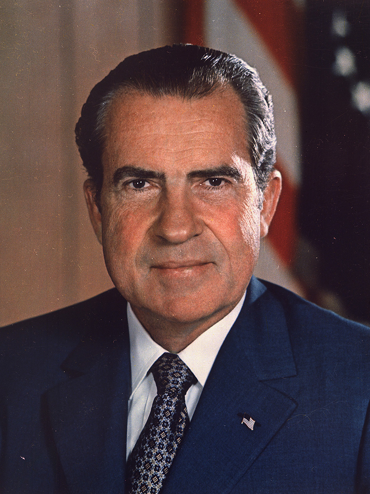

Republican candidate Richard Nixon won the presidency in 1968 after Democrat Lyndon Johnson decided not to run for a second term. This signaled an end to the political dominance of the Democratic Party. Following the Civil Rights Act of 1964, southern whites moved to the Republican Party. This period, which continues today, is marked by no single party controlling government for very long. The control of Congress and the presidency has switched back and forth relatively often. The government’s execution of the Vietnam War and Nixon’s behavior in the Watergate scandal also led to a sense of distrust for government among the American people.

A party realignment occurs when many significant social groups alter their voting behavior and switch their allegiances from one political party to another. These realignments have three basic elements:
Notice that, throughout history, when parties have dominated American politics, they’ve tended to shift and change when major events shook the nation. Examples include the Civil War and the Great Depression. Because of this, when and where there will be a change in political dominance is difficult, if not impossible, to predict.
How have the Democratic and Republican parties been able to last so long?
Analysts believe the Democratic and Republican parties have lasted because of their remarkable ability to adapt during times of crisis. Both major parties have survived periods of social, economic, and political unrest by adapting to changing needs and realigning elections. In times of change such as the Great Depression, the parties have emerged with new bases of support, new policies, and even new philosophies. Parties survive only by responding to a crisis and adapting their policies to address the current needs of the people.